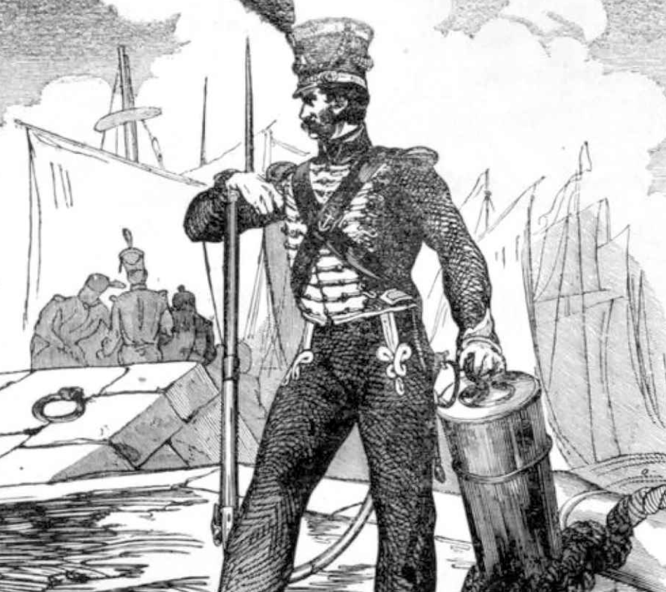
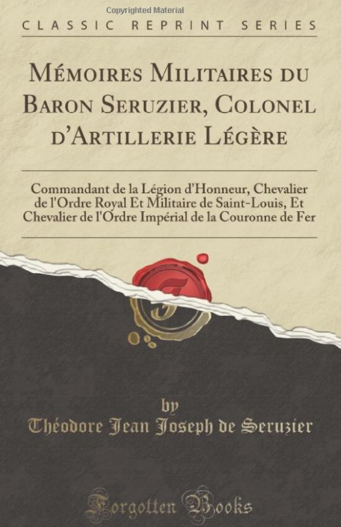
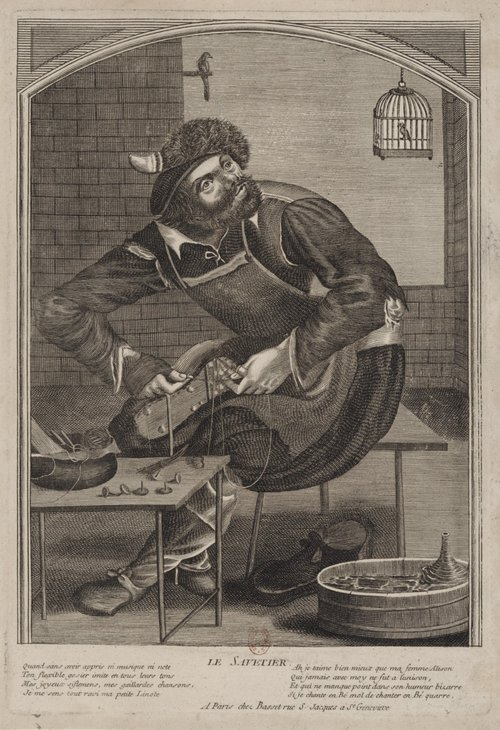

"문송합니다" - 낙오된 자들의 운명
게시: 2021-12-27T06:30:00+09:00
메이야르(Jean Pierre Maillard)라는 스위스 제2 연대의 하사관은 10월 18일 폴로츠크 전투에서 부상을 입고 어느 수도원에 차려진 임시 병원에서 다른 수백 명의 부상병들과 함께 수용되었습니다. 상황이 불리하게 돌아가던 그랑다르메는 메이야르를 포함한 그 수백의 부상병들에게 의료 처치는 커녕 물과 빵도 주어지지 않았습니다. 그래서 10월 20일 프랑스군이 물러나고 러시아군이 그 수도원을 접수했을 때, 차라리 다행이라고 생각하기도 했습니다. 하지만 착각이었습니다. 그들은 부상병들에게 물과 먹을 것을 주는 대신 누워있는 부상병들을 약탈하기 바빴습니다. 러시아군은 가진 것이 별로 없던 메이야르로부터도 군복 소매에 붙은 하사관 계급장을 뜯어갔습니다. 그런데 그 러시아군들은 양반이었습니다. 며칠 뒤 다른 러시아군이 또 우르르 난입하더니, 이번엔 메이야르에게서 아예 군복을 벗겨 갔습니다. 메이야르는 러시아군으로부터 아무 도움도 받지 못하고, 다른 수백명의 동료이 고통과 배고픔과 갈증, 부상의 고통으로 비명을 지르는 가운데 혼자서 고름을 짜내고 혼자서 기어다니며 물과 감자를 구걸하고 혼자 이를 잡았습니다. 메이야르는 자신이 저주 받아 지옥에 떨어진 것이라고 생각했습니다. 10월 20일 폴로츠크가 러시아군에게 접수될 때 그 수도원에는 200여명의 부상병이 있었는데, 11월 23일에는 25명의 부상병만 살아 남았고, 그 다음 해인 1813년 1월 12일에는 딱 2명만 남아 있었습니다. 빌나와 그 인근에서 포로가 된 그랑다르메 병사들의 운명도 딱히 다르지 않았습니다. 스모르곤에서 포로가 된 근위 해병대(les Marins de la Garde Imperiale) 병사 앙리 뒤코르(Henri Ducor)는 다른 포로 수십명과 함께 무자비한 코삭들에게 떠밀려 약 13평짜리 좁은 헛간에 감금되었습니다. 그런데 점점 더 많은 포로들이 그 헛간에 수용되었습니다. 코삭들은 그 좁은 헛간이 마치 무슨 마법의 아공간인 것처럼 닥치는 대로 포로들을 쑤셔박아 무려 400명을 그 좁은 곳에 가뒀습니다. 나중에는 포로들이 서로 꽉 끼여 발이 바닥에 닿지 않을 정도였는데, 결국 누군가가 질식해 죽으면서 시체들은 점점 무너져 바닥에 쓰러지고, 살아남은 사람들은 그 시체들을 밟고 서는 것으로 정리가 되었습니다. 앙리 뒤코르가 거기서 살아서 나올 수 있었던 것은 그가 스페인에서 포로가 되어 악명 높은 지옥섬 카브레라에서도 살아남아 결국 뗏목으로 탈출한 생존왕이었기 때문이었을 것입니다.

(기억하시려나 모르겠습니다만, 나폴레옹 시대의 베어 그릴스급 생존왕 앙리 뒤코르입니다. 그가 스페인에서 포로가 된 이야기는 https://nasica1.tistory.com/330를 참조하시기 바랍니다.) 이런 비인간적인 대우는 장교들도 피해가지 못했습니다. 코브노에서 포로가 된 40여명의 장교들은 코삭들의 포로 취급 관행에 따라 일단 옷을 모조리 벌거벗기고 흠씬 두들겨 맞는 과정을 거친 뒤, 차가운 지하실에 내동댕이쳐졌습니다. 물론 물과 먹을 것은 전혀 주지 않았고요. 며칠 뒤 그 지하실 문이 열렸을 때 거기서 살아서 기어나온 것은 불과 3명 뿐이었습니다. 멀쩡한 포로들은 물론, 부상을 입은 포로들에게도 먹을 것은 전혀 주어지지 않았습니다. 이건 여태까지처럼 러시아군도 보급 사정이 좋지 않아서 그런 것이 아니었습니다. 적어도 빌나와 코브노에는 나폴레옹이 그랑다르메를 위해 쌓아놓은 식량이 충분히 남아 있었습니다. 러시아군은 거의 의도적인 방치를 통해 그랑다르메 포로들을 실질적으로 학살했습니다. 이런 코삭들의 포로들에 대한 가혹 행위는 프랑스나 독일, 이탈리아에서는 상상하기 어려운 것이었습니다. 일부 장교 출신 포로가 러시아 정규군 장교에게 코삭들의 야만적 행위에 대해 항의해보았지만 돌아온 대답은 '나도 저 코삭들이 무섭다'라는 무책임한 것 뿐이었습니다. 덕분에 빌나 시내와 그 주변 여기저기에는 시체더미들이 수북히 쌓였습니다. 물론 운이 좋아서 살아남은 포로들도 꽤 있었습니다. 몽브렁(Montbrun) 장군의 제2 기병군단 소속 세루지에(Jean Théodore Joseph Seruzier) 대령은 네만 강을 건너기 직전 코삭들에게 포로가 되었습니다. 세루지에 대령은 포로가 될 때 부상을 입었음에도 불구하고 당연히 예외없이 두들겨 맞고 벌거벗져진 뒤 눈길을 맨발에 나체로 걸어 코브노로 다시 끌려갔습니다. 동상에 걸린 것은 둘째 치고 이런 치욕을 견디기 어려웠던 세루지에 대령은 코삭들의 총책임자인 플라토프(Platov) 장군 앞에 끌려가자 그에게 강력히 항의했으나 아무 소용 없었습니다. 그는 역시 코삭 출신이었던 플라토프에게 빈정거림이나 실컷 당했습니다. 플라토프의 아들이 그를 불쌍히 여겼으나 그래도 준 것은 몸을 가릴 천조각에 불과했습니다. 이렇게 중요 부위만 가린 채 또 후방으로 끌려가던 그를 구원해준 것은 다름 아닌 7년 전의 세루지에 본인이었습니다. 1805년 아우스테를리츠 전투에 참전했던 그는 러시아 장교 하나를 포로로 잡은 뒤 기사도적인 예의를 다해 그 러시아 장교를 잘 예우했었습니다. 그런데 이제 대령으로 승진한 바로 그 장교를 딱 마주친 것입니다. 러시아 대령도 세루지에를 알아보고는 그에게 제대로 된 옷과 돈을 주었을 뿐만 아니라, 포로들을 호송하던 책임 장교에게 온갖 협박과 부탁을 해주었습니다. 세루지에의 로또 당첨은 한 번으로 그치지 않았습니다. 5년 전 틸지트와 4년 전 에르푸르트에서 나폴레옹과 알렉산드르가 회담을 가질 때 세루지에도 알렉산드르의 친동생 콘스탄틴 대공과 인맥을 쌓아 두었는데, 빌나까지 끌려온 그는 거기서 콘스탄틴 대공 근처를 지나가게 되었던 것입니다. 결국 콘스탄틴 대공 덕분에 그는 특별 대우를 받고 살아날 수 있었습니다.

(세루지에 대령도 살아남아 이렇게 회고록을 썼습니다. 세루지에 대령은 나폴레옹과 동갑이었고 1825년에 사망했으며, 나중에 남작 작위를 받았다는 것 외에는 별로 알려진 것이 없네요.)
장교들도 이렇게 빽이 든든해야 목숨을 부지할 수 있는 마당에 부사관이나 사병들은 모두 죽은 목숨이었을까요? 여기서도 역시 문과보다는 이과가 더 낫다는 것이 입증됩니다. 뭔가 실용적인 기술을 가진 포로들은 즉각 특별 대우를 받았습니다. 가장 우대받는 기술은 역시 의사였습니다. 군의관이었던 르 플리즈(La Flise)도 처음에는 험한 대접을 당했으나, 그가 의사라는 것이 밝혀지자 즉각 러시아 군의관과 함께 러시아군을 돌보는 일에 투입되었습니다. 그 외에도 재단사, 구두 수선공, 대장장이 등등 기술자라고 불릴 만한 사람들도 모두 뽑혀서 러시아군에 배속되어 러시아 병사들을 위해 일했습니다. 이적 행위 아니냐고요? 그런 한가한 소리는 영하 20도의 날씨에 벗은 몸으로 야외에서 3일만 노숙하며 굶어 보면 절대 나오지 않을 것입니다. (만약 3일 뒤에도 살아남을 수 있다면요.) 무조건 이과생들만 살아남았던 것은 아니었습니다. 예체능 계통에게도 길이 있었습니다. 프랑스군 나팔수는 코삭들에게 포로가 되자, 몸에 지니고 있던 클라리넷을 연주했고, 그 연주를 들은 코삭들은 그를 데리고 다니며 저녁마다 연주를 하게 했습니다.

(18세기 파리의 구두 수선공을 그린 작자 미상의 목판화입니다. 제목은 "Le savetier"인데, savetier는 구두 수선공이라는 뜻 외에도 '솜씨없는 기술자'라는 뜻도 있다고 합니다. 단어만 봐도 당시 구두 수선공이 그다지 우대받는 직업은 아니었던 것 같습니다만, 러시아군에게 포로가 된 상태에서는 라틴어 교수보다는 구두 수선공이 훨씬 나은 직업이었습니다. 영어 cobbler에 해당하는 일반적인 구두 수선공은 cordonnier 또는 cordonnière 라고 합니다.)
이도 저도 없는 포로들은 국적을 부각시켜 보기도 했습니다. 독일인들은 자신들이 프랑스인이 아니라고 주장하여 조금이라도 나은 대우를 받아보려 애썼고, 네덜란드인들은 자기들이 독일인인 척 하려 애썼습니다. 폴란드인 포로들도 자신들이 같은 슬라브 계통인 폴란드인임을 호소했습니다. 그러나 다 별 소용없었고, 제일 잘 먹히는 국적은 바로 스페인 내지는 포르투갈이었습니다. 스페인과 포르투갈에서 민중들이 주도하는 게릴라가 프랑스군을 무찔렀다는 이야기는 1812년 훨씬 이전부터 러시아에서도 유명했기 때문이었습니다. 조제프-나폴레옹 연대 소속 데 얀사(Don Raphael de Llanza)라는 장교는 부하들과 함께 포로가 될 때 큰 목소리로 '우리들은 스페인 사람이다'를 외쳤는데, 러시아군은 이들을 매우 우대해주었습니다. 뿐만 아니라 이들이 포로로서 후방으로 호송될 때도, 지나치던 농촌 마을에서 러시아 주민들이 몽둥이를 꼬나잡고 포로들을 흠씬 두들겨 패려고 뛰어나올 때마다 코삭들이 큰 소리로 '이들은 스페인 사람이다'라고 외치면 주민들이 금세 표정이 바뀌어 환호를 해주었다고 합니다. 모든 러시아인들이 포로들을 학대한 것은 아니었습니다. 인심 좋은 푸근한 시골 마을이라는 일반적인 인식과는 달리 시골 마을일 수록 농민들이 포로들을 가혹하게 대했고, 반대로 모스크바처럼 대도시 주민들은 그랑다르메 포로들에 대해 동정심을 가지고 대했습니다. 베나르(Benard)라는 하사는 부상당한 동료들과 함께 포로가 되어 짐수레에 실린 채 모스크바로 끌려갔는데, 자신들에 의해 그토록 많은 피해를 입었던 모스크바 주민들이 자기의 예상과는 달리 증오심 대신 동정심을 보여주며 자신들이 탄 짐수레에 이런저런 먹을 것과 옷가지 등을 넣어주는 것을 보고 무척 놀라고 감동했다고 합니다. 또 어디까지나 기독교적인 인도주의 정신을 강조하던 짜르 알렉산드르는 장군들과 관료들에게 그랑다르메 포로들을 자비롭게 대하라고 지시했습니다. 추위와 배고픔, 학대를 견디어내고 베나르 하사처럼 마침내 꽤 규모가 큰 도시나 마을에 도착한 포로들은 거기서 행정 관료들에게 넘겨졌는데, 거기서부터는 원래 포로들에게 당연히 주어져야 하는 최소 식비가 지급되었고 또 거기서 노동을 해서 약간의 돈을 벌 수도 있었습니다. 물론 예외도 있었습니다. 탐보프(Tambov)의 행정장관 가가린(Gagarin) 대공에게 맡겨진 독일인 포로들은 무척 가혹한 대접을 받았는데, 독일인들이 항의하자 가가린 대공은 이렇게 대답했다고 합니다. "지옥으로 꺼져라, 이 프랑스의 개들아! 하늘은 아주 높고 짜르께서는 아주 멀리 계신다!"
Source : 1812 Napoleon's Fatal March on Moscow by Adam Zamoyski
https://books.google.de/books?id=PT8UAAAAQAAJ